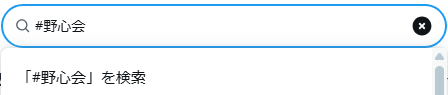
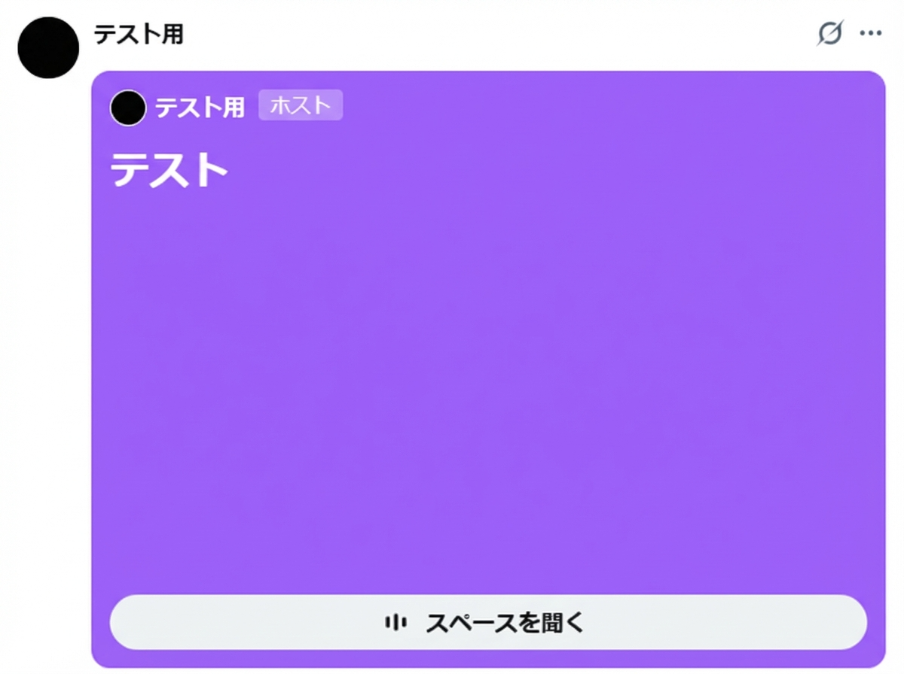
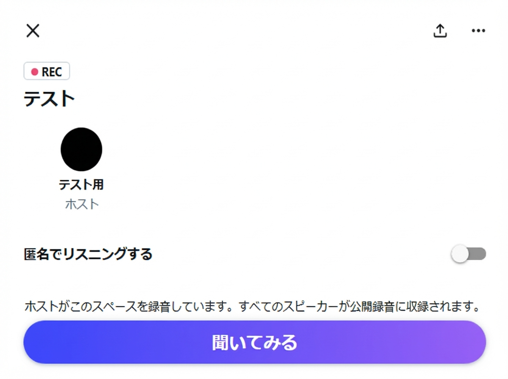
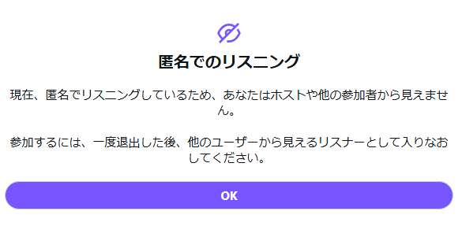
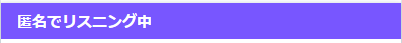

野心を持つあなたの参加をお待ちしています。
野心会のイベントはX（旧Twitter）のスペース機能で開催しています。参加は無料・匿名でも可能です。
野心会共同創設者のXアカウント（@bc7_ot・@OkitaYuho・@naoya_758）をフォローし、
スペース開催の告知をチェックしてください。
ハッシュタグ #野心会 でも確認できます。

告知ツイートに記載されたスペースのリンクをタップすると、
スペースの入室画面が表示されます。

「聞いてみる」ボタンを押すだけで入室完了です。
マイクはデフォルトでオフのため、リスナーとして参加できます。

Xのアカウントがなくても、ブラウザからリンクを開くことでアーカイブを
聴くことができます。
リアルタイム参加にはXアカウントが必要ですが、ログインなしでも閲覧のみ可能な場合があります。

